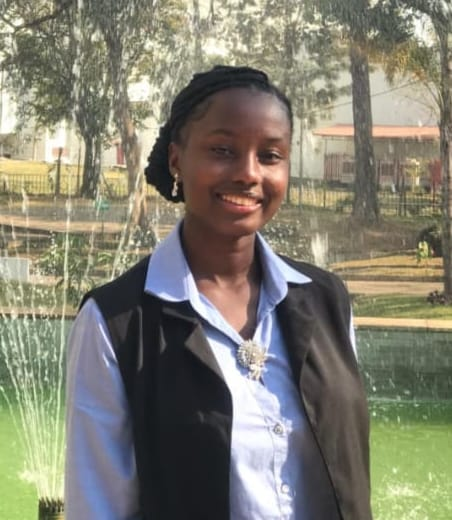

My name is Bahati George James. I'm a first-year student at the University
of Dar es Salaam, pursuing a Bachelor of Science degree in Computer
Science.
I chose this field because I believe that technology, when guided by people who understand people, has the power to change lives.
I want to be one of those people who bridges that gap between code and community.
I chose this field because I believe that technology, when guided by people who understand people, has the power to change lives.
I want to be one of those people who bridges that gap between code and community.
